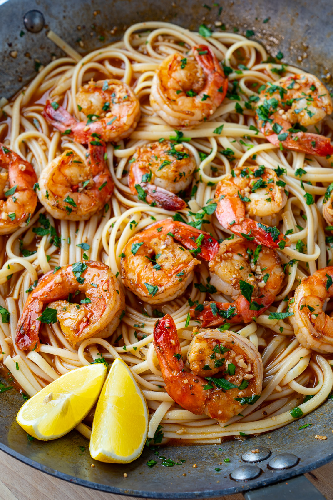

Cajun BBQ Shrimp Scampi Linguine

Ingredients
- 8 ounces linguine (or other pasta) (gluten free for gluten free)
- 2 tablespoons butter
- 1 teaspoon cajun seasoning
- 1 pound jumbo shrimp (16-24), shelled and deveined
- 4 cloves garlic, chopped
- 1/2 cup chicken broth (or white wine or beer)
- 1 tablespoon Worcestershire sauce
- 1 tablespoon hot sauce (such as Franks Red Hot, or to taste)
- 2 tablespoons lemon juice
- 2 tablespoons butter, chilled and cut into 1/2 inch pieces
- 1 tablespoon parsley, chopped
Steps
- Start cooking the pasta as directed on package.
- Meanwhile, melt the butter in a pan over medium-high heat until frothing, add the shrimp, seasoned with the cajun seasoning, cook for 2 minutes, flip, add the garlic cook until fragrant, about a minute.
- Add the broth, Worcestershire sauce, hot sauce, and lemon juice and bring to a boil before shutting off the heat and mixing in the butter and parsley.
- Toss the shrimp and sauce with the pasta and enjoy along with some optional bread for soaking up any extra sauce!Start cooking the pasta as directed on package.
Home Page